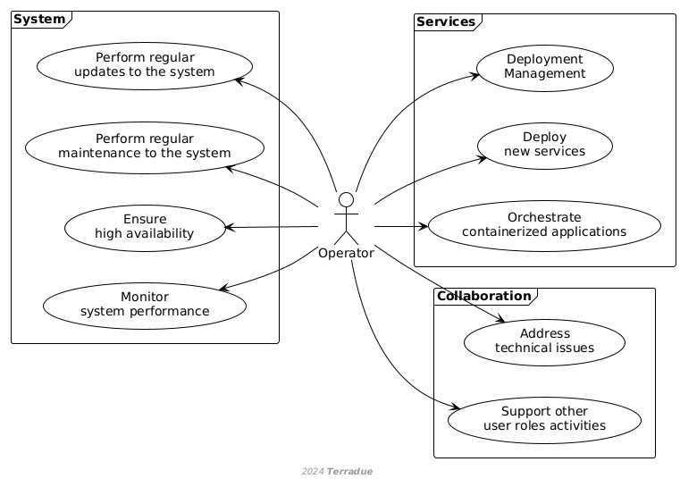

D1 · CopernicusLAC Centre Specification and Performance Requirements · Capítulo 2.5
Operator
Operator: gestiona el despliegue y orquestación de aplicaciones, vigila el rendimiento, aplica mantenimiento, despliega servicios nuevos y da soporte a los demás roles.
pp. 11–121 fig.
Operators oversee the overall operation and maintenance of the CopernicusLAC platform. Their key duties include:
- Managing the deployment and orchestration of containerized applications.
- Monitoring system performance and ensuring high availability.
- Performing regular maintenance and updates to the system.
- Deploying new services developed by Service Developers as part of the platform's offerings.
- Addressing technical issues and ensuring the system operates smoothly.
- Coordinating with other user roles to support their activities and address any issues that arise
